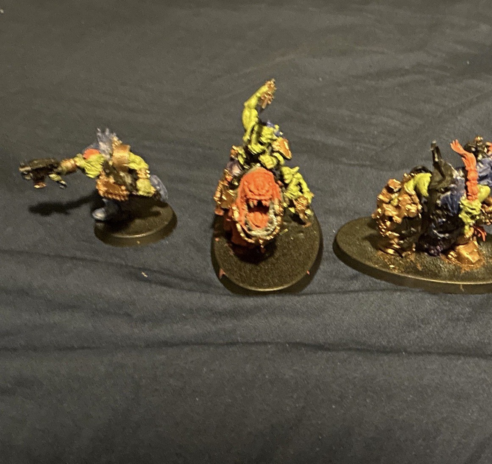
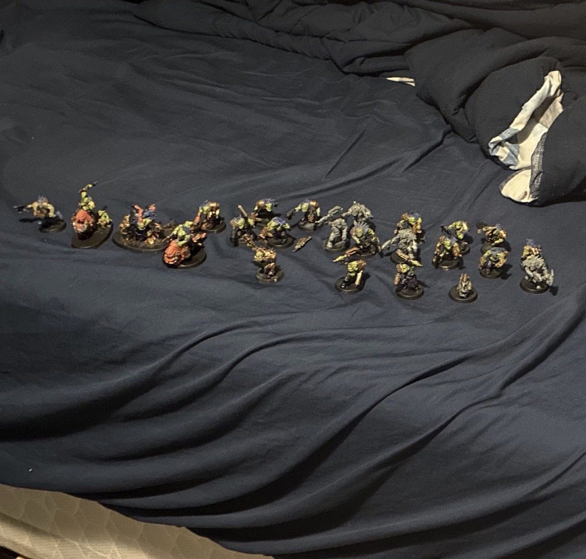
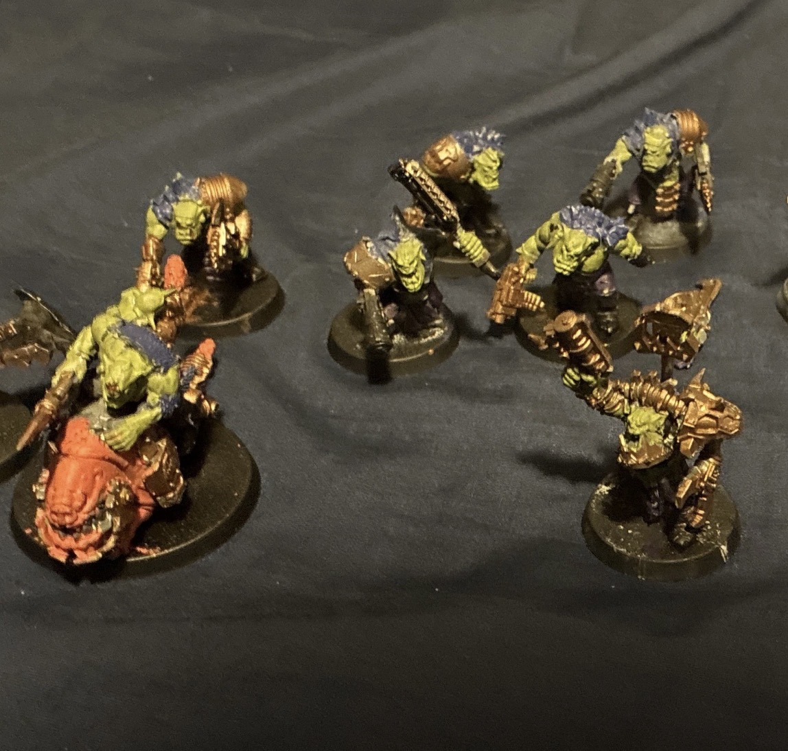
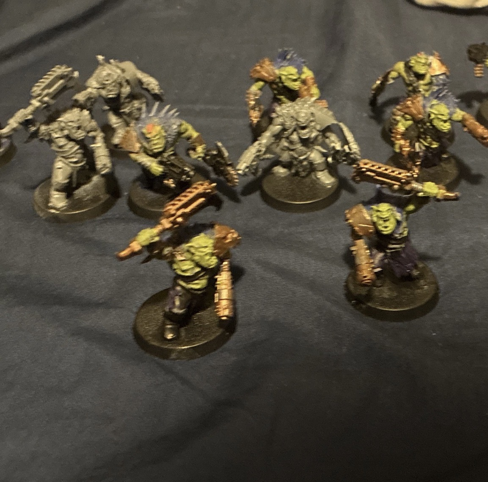
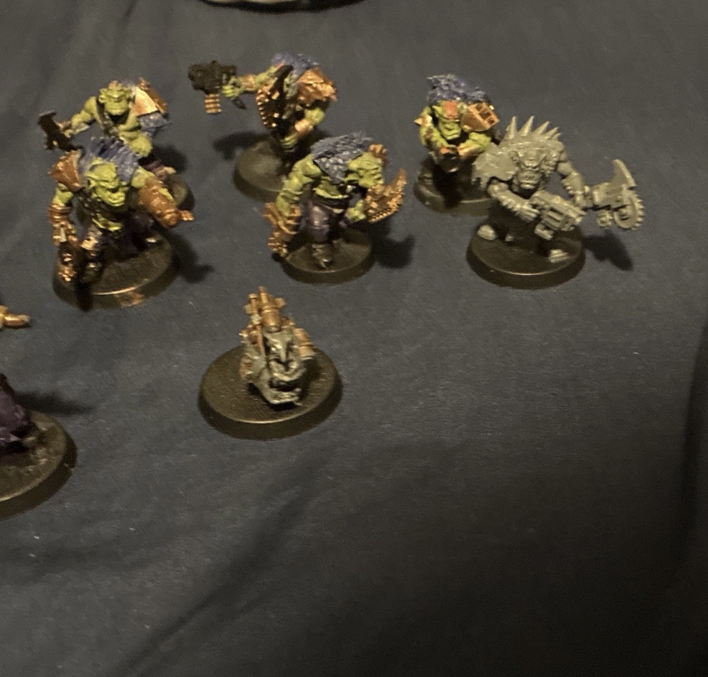

In These images are the Warhammer miniatures I got for my birthday and for the first time I built the glue plastic that make the pieces melt together an I got the paint for it already so I built them then painted them. painting them was kind of difficult because I was nervous and my hands were shaking leading to me making them a bit messy but it worked out in the end and its meant to be played with another person.
pixabay